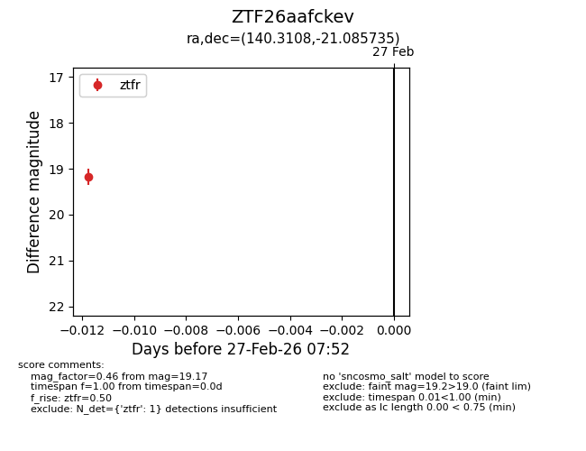
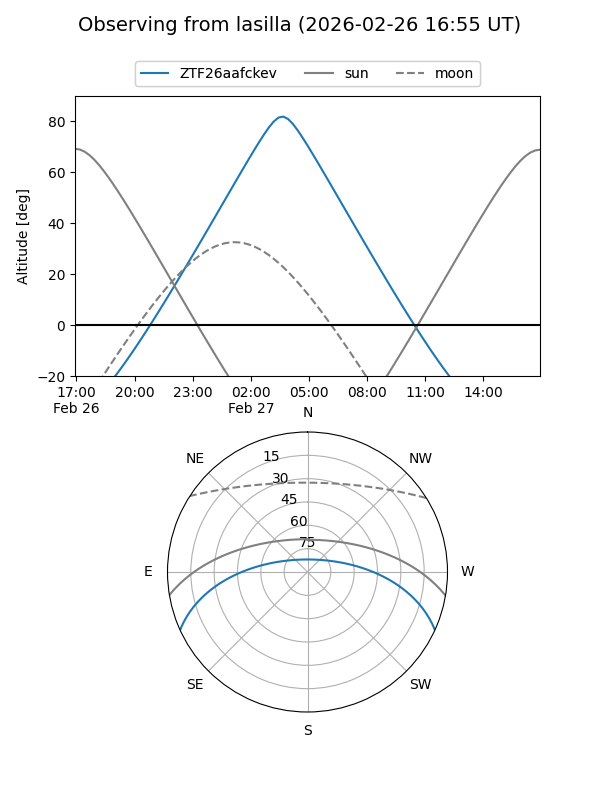
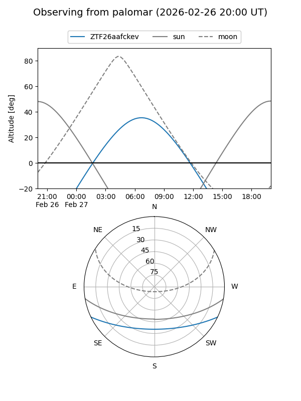

ZTF26aafckev
Target ZTF26aafckev at 2026-02-27 07:53
Aliases and brokers:
FINK: link
Lasair: link
ALeRCE: link
alt names
ZTF26aafckev (ztf,fink_ztf)
Coordinates:
equatorial (ra, dec) = 140.3108,-21.08573
equatorial (HMS+DMS) = 09:21:14.60,-21:05:08.65
galactic (l, b) = (250.9410,+19.93217)
Flags:
Photometry:
last ztfr=19.17
1 ztfr detections
Lightcurve

Visibility


Additional plots